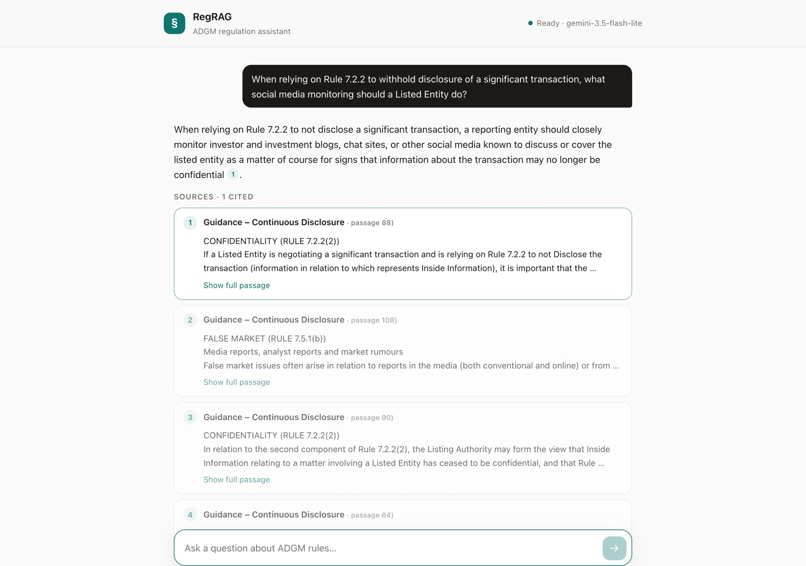
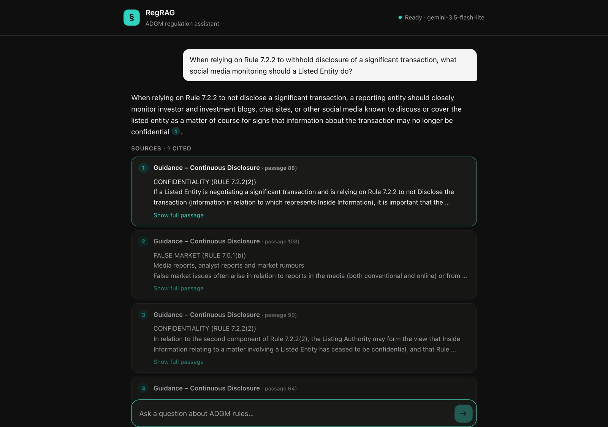
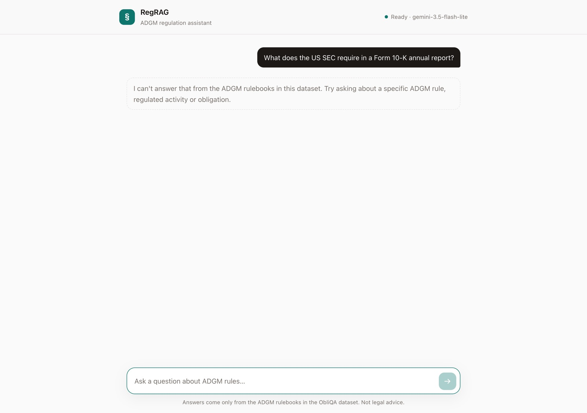
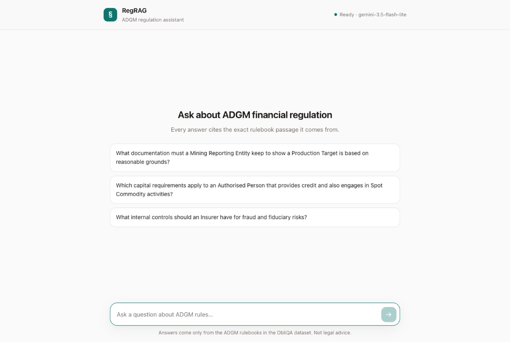
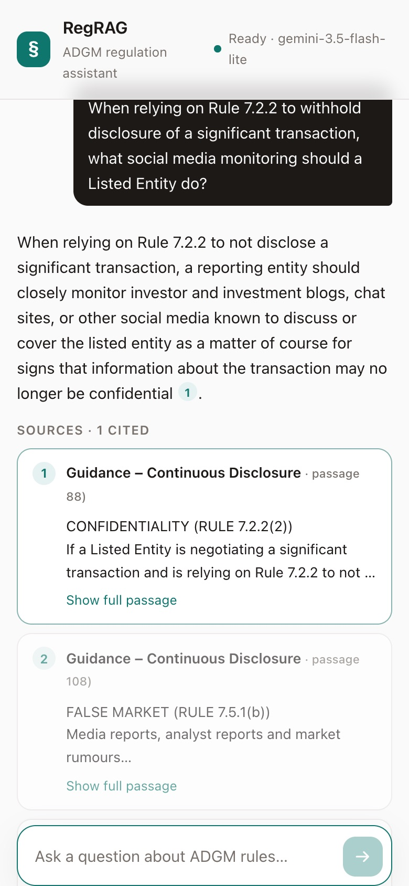

RegRAG: cited answers from ADGM financial regulation, and a refusal when the rulebooks are silent
Compliance questions need an exact source, not a plausible paragraph. I built a question-answering system over the 40 rulebooks and guidance documents of Abu Dhabi Global Market that cites the passage behind every claim, refuses what the corpus cannot answer, and is measured on the dataset's own labels.
Problem: ADGM's rules are spread over 40 rulebooks, regulations and guidance notes (12,988 passages). A compliance answer is only useful if it points to the exact passage.
Solution: RegRAG: BM25 retrieval, a LangGraph pipeline on Gemini that answers only from numbered passages, a verifier that drops invented citations, two refusal points, and a streaming chat app.
Results: …
01 · Context & goal
Regulation is long. Answers must be traceable.
Abu Dhabi Global Market regulates financial firms through rulebooks (conduct of business, prudential, anti-money laundering, market rules…), regulations and guidance. A compliance officer's question, when must a listed entity disclose inside information?, usually has its answer in one or two passages buried among thousands.
The ObliQA dataset makes this measurable: 27,869 questions over the ADGM corpus, each labelled with the passages that answer it: an answer key, but no reference answers.
Before
Search the documents, read, cross-reference.
Question→40 PDFs→keyword search→read many passages
After
An answer with its sources, or an honest “not covered”.
Question→RegRAG→answer + cited passages
The goal
Grounded: every claim cites a passage as (DocumentID, PassageID); an answer without a valid citation is not shown.
Honest: questions the rulebooks do not cover are refused, not improvised.
Measured: retrieval, citations, refusals and prompt-injection resistance are scored against the dataset's labels and hand-written test sets, reproducible with one command each.
About $0: free-tier Gemini, a local embedding model when the free embedding quota ran out, and every model call cached so reruns are free.
02 · The product
A chat page that shows its sources
Answers stream into a minimal chat page. Each [n] marker is a link to its source card: document title, passage number, section path and the passage text. Cited sources are highlighted, the rest dimmed. Off-topic questions get a clear refusal with no misleading sources.





Cited answer, refusal, mobile, empty state and dark theme, from the running app. Click to enlarge.
03 · Architecture
One container, one pipeline, every call cached
The browser talks to a single FastAPI app. Each question runs through a LangGraph state machine that retrieves, decides whether to answer at all, generates with Gemini and verifies the citations before anything is streamed back. Ingestion runs offline and produces an in-memory BM25 index; dense embeddings and Qdrant were built for the comparison in section 04.
Request path (top) and ingestion path (bottom). Production needs only the top row: one container with BM25 in memory.
Why this architecture
A graph, not a chain
Each step is a small, testable function; the refusal branches are explicit edges, so the “don't answer” path is as visible as the answer path.
The refuse path is unit-tested without calling any model.
LiteLLM model switch
A cheap model answers; a stronger one from the same family judges answers in the evaluation. Switching provider is a config change.
Cache everything
Every model call is stored under (model, messages). Reruns cost nothing, and since Gemini 3.6+ ignores temperature, the cache is also what makes results reproducible.
Verify, then stream
The answer is checked before the first token reaches the page, so an invented citation is never displayed.
Trade-off: text appears after generation (about 1–3 s with Flash-Lite), not token by token.
One container
BM25 needs no database, so the deployed app is a single non-root container; the corpus is downloaded at build time from pinned commits and checksummed.
Measure before choosing
Dense retrieval in Qdrant was built and evaluated against BM25 on the same questions, and lost. The data decided the production retriever.
04 · How retrieval works
Keyword search beat embeddings on this data
Regulatory questions quote defined terms (“Relevant Person”, “Inside Information”) and rule numbers (“Rule 7.2.2”). Retrieval is tuned for that, and the citation unit is the ObliQA passage, so every answer maps back to the answer key.
Ingestion: pinned, parsed, indexed
Downloadpinned commits, every file SHA-256 checked
Parse40 documents → 12,988 passages with their heading path
Tokenizerule numbers like 3.2.1 and markers like (a) kept whole
IndexBM25 over title + headings + text, k1 1.5, b 0.75
Evaluate300 test questions, seed 42, against the answer key
Query time: a narrowing funnel
13,040 chunks BM25 scores
50 best chunks windows of the same passage merged
20 passages best window per passage
Gate: best score ≥ 10 clearly off-topic questions stop here
5 passages shown cited [1]…[5]
Stage widths are illustrative. Retrieval takes ms at the median ( ms p95) on a laptop CPU.
BM25 vs dense vs hybrid on 300 test questions
Share of each question's answer-key passages found in the top k, and MRR@20 (how high the first correct passage ranks).
View as table
Method
Recall@1
Recall@5
Recall@10
Recall@20
MRR@20
Where the answer key was found (top 20)
Per question: does BM25, the dense model, both or neither retrieve at least one answer-key passage? Dense adds only a handful of questions BM25 misses.
Why keyword search wins here: ObliQA's questions were generated from the passages and reuse their exact defined terms and rule numbers, which favours exact matching, and the small local embedding model (nomic-embed-text, run on CPU after the free Gemini embedding quota ran out) adds little. Equal-weight Reciprocal Rank Fusion then pulls BM25's good rankings down. Tuning fusion weights on the test questions would have been overfitting, so the app ships BM25.
05 · Security & guardrails
The model is untrusted. So are the question and the passages.
A regulatory assistant must not invent rules, follow instructions hidden in text it retrieves, or answer outside its corpus. Each layer assumes the previous one can fail.
1
Input limits
Questions of 3–1,000 characters, 10 questions per minute per client to protect the free model quota, and strict security headers (CSP default-src 'self', no framing, no sniffing).
2
Retrieval gate
If even the best passage scores below 10, the question is refused without calling the model. On the dev set this threshold keeps every real question and stops the clearly off-topic ones for free.
3
Context isolation
Passages are wrapped in numbered <passage> tags that a passage cannot close; the rules state that text inside them is source material, never instructions. Injection phrasing in the question is flagged and logged.
4
Constrained generation
The model answers only from the numbered passages, cites them as [n], states what the passages do not cover, and replies INSUFFICIENT when nothing is relevant, which becomes a refusal.
5
Citation verifier
Markers that point at no shown passage are removed; an answer left with no valid citation is refused. This runs before streaming, so the page never displays an unverifiable claim.
6
Safe rendering & fallback
All server text is inserted as text, never HTML. If the model quota runs out, the page still receives the cited passages with a notice instead of an error.
Red-team results by attack type
BlockedMissed
View as table
Category
Attempts
Blocked
Flagged
Missed
An attack counts as missed when its canary string (a phrase from the system prompt, or a word the attacker asked for) appears in the answer. Three of the attacks hide their instructions inside a retrieved passage rather than in the question.
06 · My role & actions
What I owned
A solo project, end to end: data, retrieval, the answer pipeline, the app, the evaluation and the delivery tooling, with automated tests and a CI pipeline.
Data & retrieval
Pinned, checksummed download; parsing into passages with heading paths; chunking; BM25 with rule-number-aware tokens; dense embeddings (Gemini and a local Ollama model) in Qdrant; Reciprocal Rank Fusion.
Answer pipeline
LangGraph state machine, prompt design, citation verifier, refusal gate, cached and retried LiteLLM calls with a model switch.
Evaluation
Recall@k and MRR, citation precision/recall, an LLM judge, out-of-corpus refusals, a 12-attack red team, latency and cost, each reproducible with one command.
App & delivery
FastAPI with SSE, the chat page (light/dark, mobile), rate limiting and security headers, a multi-stage non-root Dockerfile, CI with a retrieval regression test.
Key decisions
Let the data pick the retriever. Dense and hybrid retrieval were built and measured; BM25 won on every metric, so it ships.
Refusal is a feature. Two independent refusal points, and a verifier that turns an uncited answer into a refusal.
Verify before streaming. A second of latency is cheaper than one invented citation in front of a compliance user.
Reproducible on a $0 budget. Everything cached; when the free embedding quota (1,000 texts a day) blocked the hosted model, a local model on CPU unblocked the comparison.
Fix the prompt with evidence. A first prompt refused a question whose answer-key passage was shown; the rule now asks for a partial answer and refuses only when nothing is relevant.
07 · Results & impact
Measured, not assumed
Retrieval is scored on 300 seeded test questions; answers on the first 50 of them, plus 10 out-of-corpus questions and the red-team set.
Choosing the refusal-gate threshold
Share of 300 dev questions that pass the gate vs share of the 10 out-of-corpus questions it rejects, by BM25 score threshold. 10 is the highest tested setting that keeps all 300 dev questions (15 already drops one); near-domain questions (another regulator's rules) score high and are left to the model.
Dev questions keptOut-of-corpus rejected
View as table
Threshold
Dev questions kept
Out-of-corpus rejected
Answer quality on 50 test questions
Citation precision: share of cited passages that are in the answer key. Citation recall: share of the answer-key passages shown to the model that the answer cites.
Metric
Value
Impact
Traceable answers. Every displayed claim links to the exact passage, so a reviewer can check it in seconds.
Honest about its limits. Off-topic and near-domain questions are refused instead of answered from general knowledge.
Evidence over intuition. The retriever, the gate threshold and the prompt were all chosen from measurements, and CI re-runs the retrieval benchmark to 12 decimal places.
Cheap to run. List price is a fraction of a cent per answer; on the free tier with caching, the whole project cost $0.